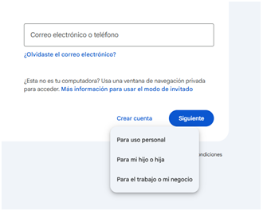
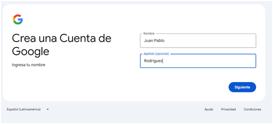
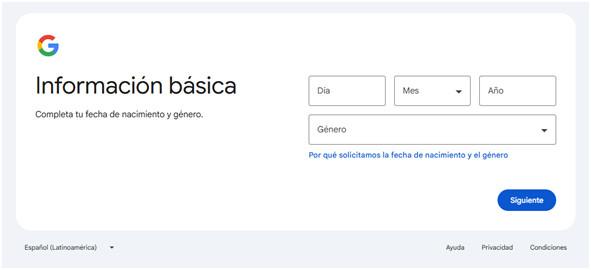
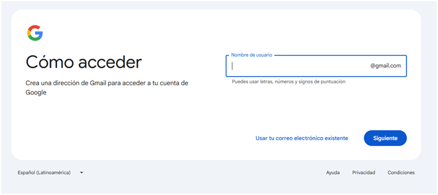
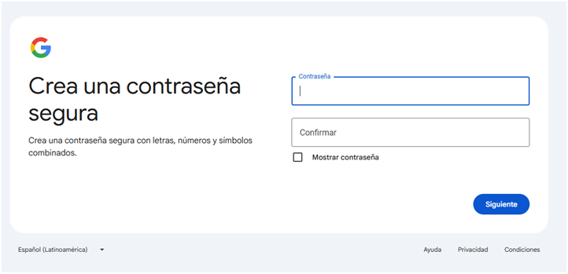
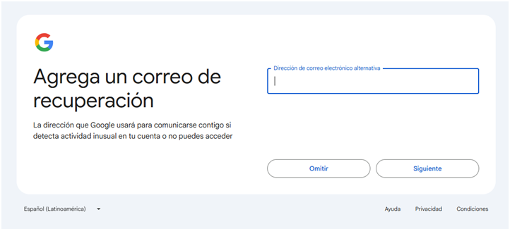
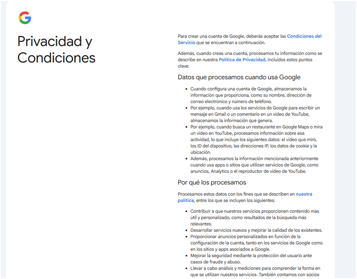
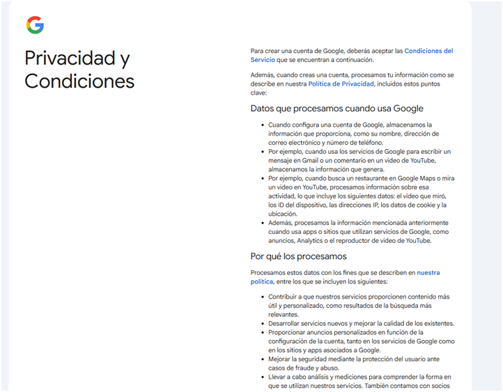

Cuentas personales
Para crear una cuenta, se debe seleccionar el botón “Crear cuenta”, una vez seleccionado dicho botón se abrirá la siguiente pantalla:

En esta pantalla se debe especificar el tipo de cuenta que se desea crear: En este caso PARA USO PERSONAL.
Para uso personal, la cuenta no tiene limitaciones de edad, por lo cual dejará acceder a todas las herramientas
de Google.
Una vez seleccionado la opción para cuenta personal, se podrá visualizar la siguiente pantalla donde se sebe
indicar Nombre y Apellido de la persona que está creando o va a usar la cuenta. Una vez indicado el nombre y el
apellido, se debe clickear en el botón "siguiente".

En la pantalla siguiente se debe ingresar los datos de fecha de nacimiento y género. Al finalizar clickear en el
botón "Siguiente"

Luego se abrirá otra pantalla donde se debe definir el nombre de la cuenta con la que se va a acceder a las
aplicaciones de Google. En este momento, puede ser que al crear la cuenta Google detecte que la misma ya existe,
por lo que indicará alguna sugerencia o sino se puede optar por cambiar el nombre a gusto. Al finalizar clickear
en el botón "Siguiente".

Una vez aprobado el nombre de la cuenta se debe indicar una contrasena. Para ello se debe colocar en el campo
contraseña una clave y en el campo confirmación volver a repetir la misma.
Por lo tanto se abrirá la siguiente pantalla donde se
debe indicar la contraseña que va a tener la cuenta de Google. Al finalizar clickear en el botón "Siguiente"

Por un tema de seguridad, Google va a requerir los datos de una cuenta alternativa, la cual se puede saltear con
el
botón "omitir", de lo contrario, se puede ingresar otra cuenta y clickear en el botón "Siguiente"

Luego Google va a mostrar dos pantallas, una para verificar los datos cargadas y por otro lado el contrato de
creación
de cuenta.
 

Al finalizar, Google direccionará a la casilla de correo de Gmail de la cuenta creada.
Video Tutoriales
Creación de cuenta - parte 1Creación de cuenta - aprte 2
Cómo escanear código QR con el celular para crear cuenta en Google
Para escanear un código QR y crear una cuenta de Google, debes usar la cámara de tu smartphone o un escáner de QR. Abre la aplicación de la cámara, enfoca el código y toca el enlace que aparece para iniciar el proceso. Si se trata de la aplicación de autenticación de Google, debes usarla directamente, presionar el signo "+" y seleccionar "Escanear un código QR">
Usando la cámara del smartphone Abre la cámara: Inicia la aplicación de la cámara de tu teléfono. Enfoca el código QR: Apunta la cámara hacia el código QR que deseas escanear. Toca el enlace: Una notificación o banner aparecerá con un enlace. Toca el banner para continuar. Sigue las instrucciones: Sigue los pasos en la pantalla para completar la creación de la cuenta. Si ya tienes una cuenta iniciada, es posible que se te pida seleccionar un dispositivo para escanear.